Residential — Bucharest, 2026
Concept
Most of this house runs on three materials — light oak floors, walnut cabinetry, and linen-textured wall panels — kept quiet on purpose. Then, behind one door, the palette breaks: a powder room in deep bottle green, the one room in the house that isn't trying to stay out of the way.
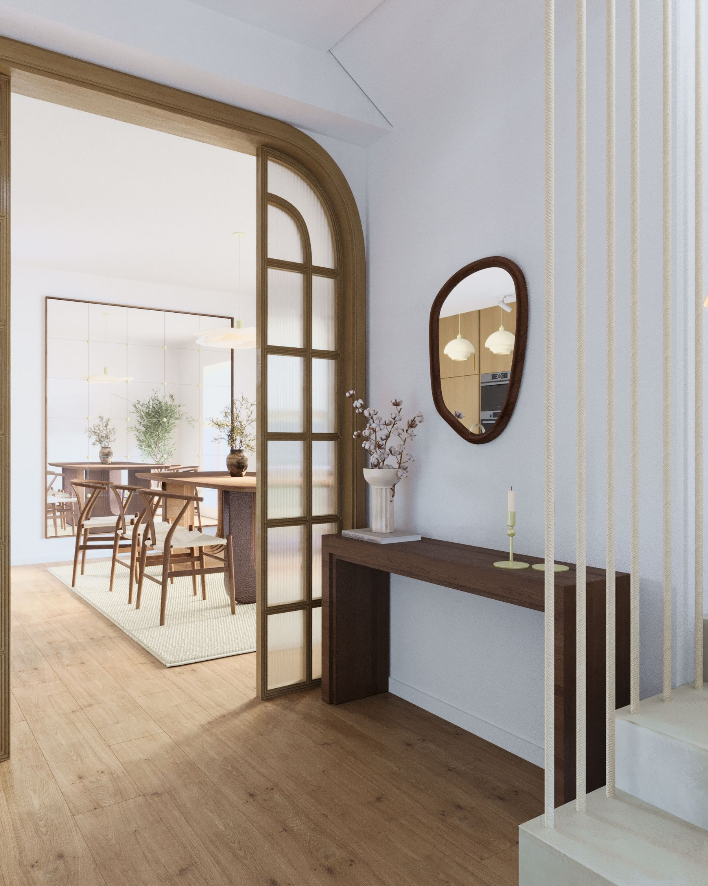
Entry
A narrow console and an oval mirror are the only furniture in the entry — everything else is the arched glass door, framing the dining room before you've stepped into it.
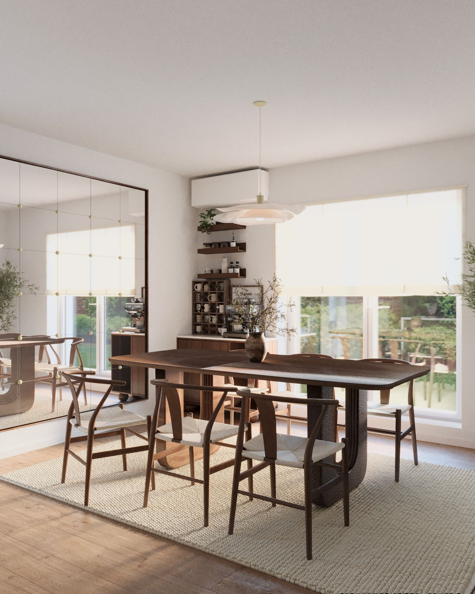
Seven chairs around a table built for one — the olive tree in the corner does the rest of the decorating.
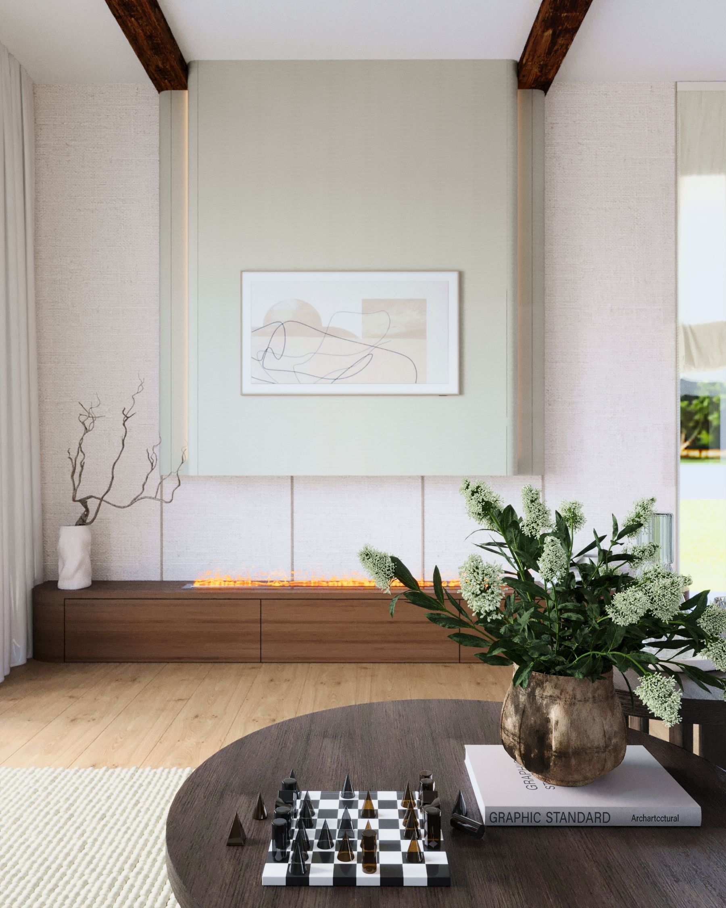
Reading Corner
The bookshelf holds an actual telescope next to actual books — the kind of corner that gets used, not photographed and then avoided.
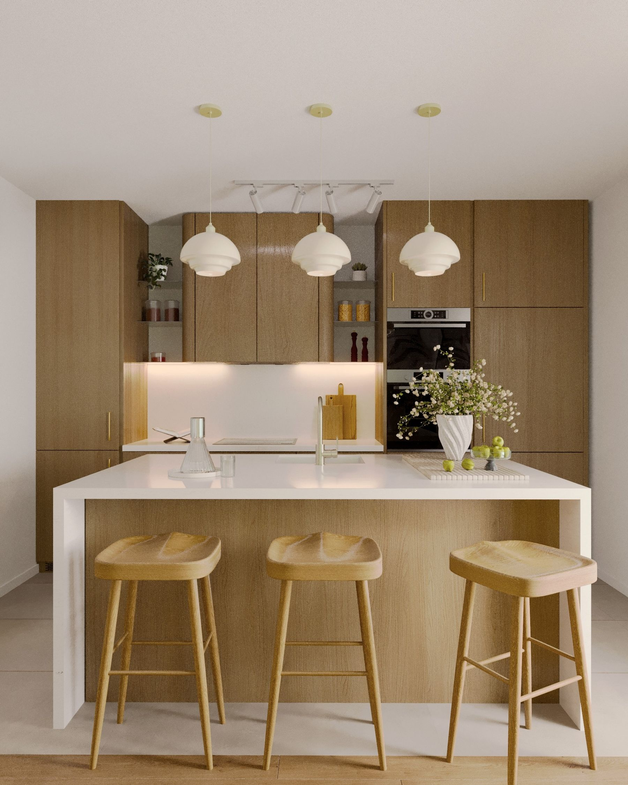
Kitchen
Cerused, pale-grain oak instead of the darker stain used everywhere else — the kitchen is the one room that runs on daylight, so the wood was chosen to keep catching it.
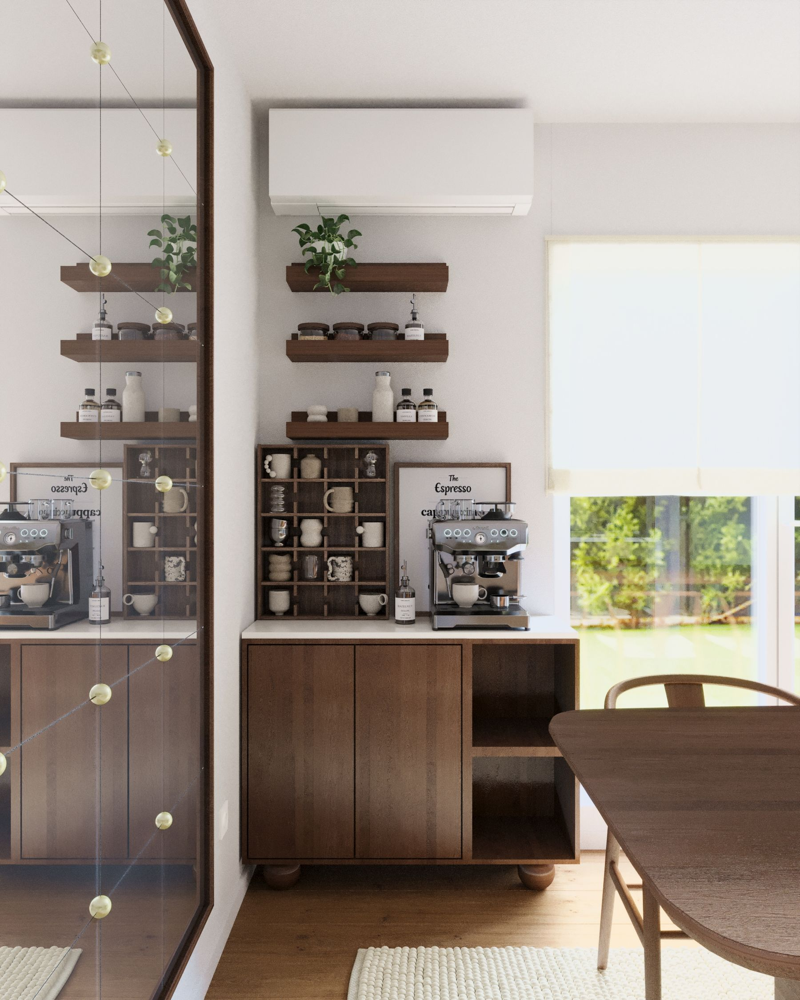
A proper coffee corner — open shelving instead of a cabinet, so the good cups stay visible.
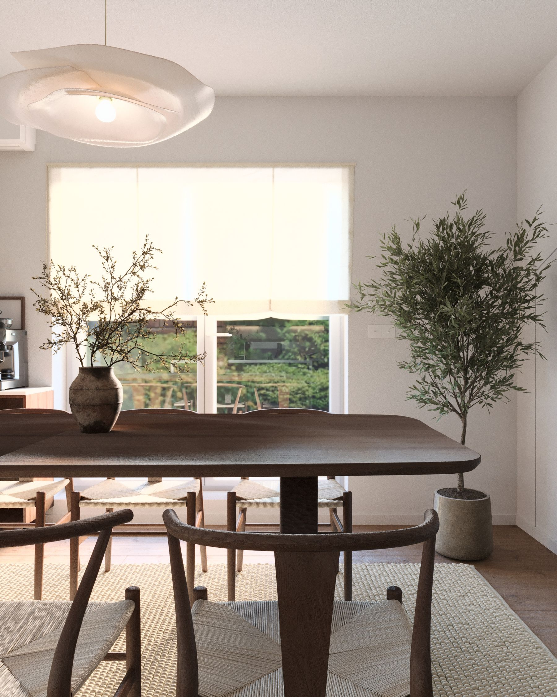
Dining
No runner, no place settings — just a single stoneware vase, because the table is meant to look ready on an ordinary night, not staged for one.
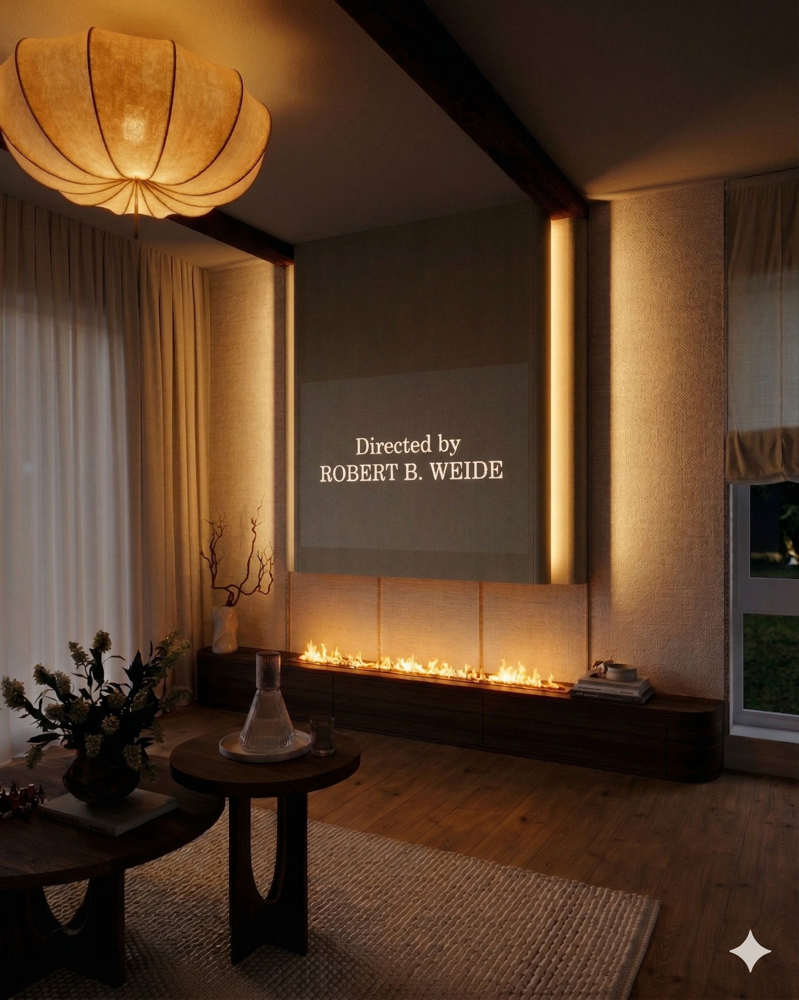
Evening
By evening the linen wall behind the fireplace catches the up-light and the room stops being a living room and starts being the only lit room in the house.
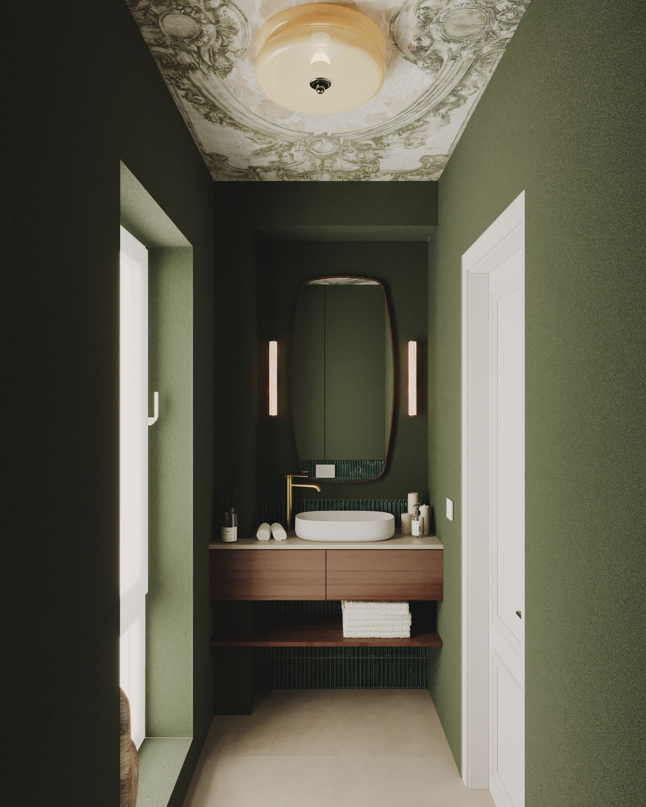
05 — Every other room agrees with the next one. This one doesn't try to.
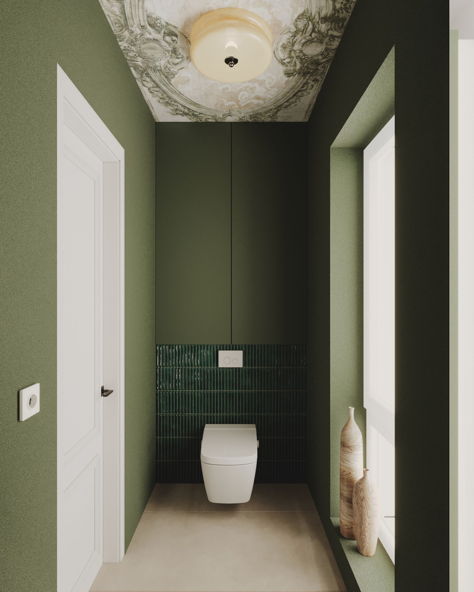
Powder Room
A hand-painted plaster medallion survived the renovation by accident — it's the reason the whole room went dark green instead of matching the rest of the house.
Details
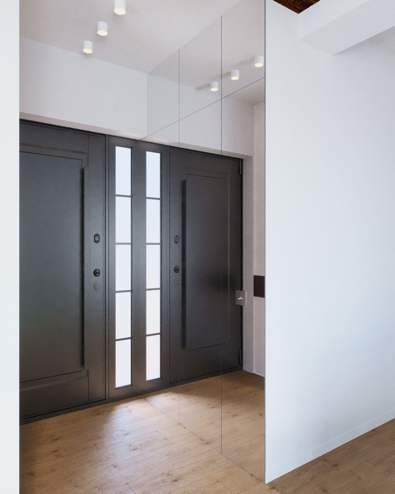
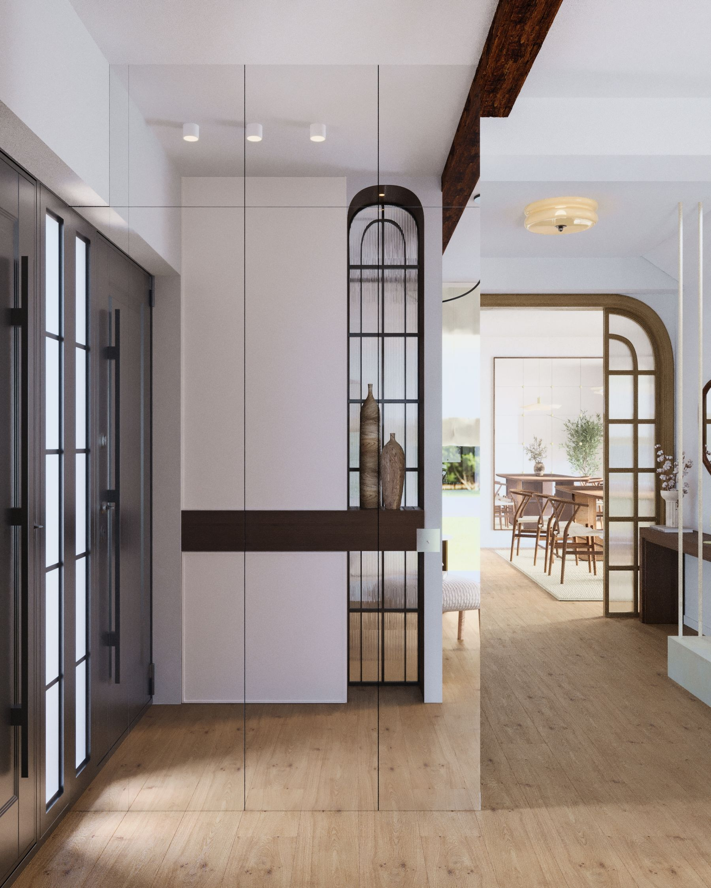
Ți-a plăcut acest proiect? Rezervă o consultanță gratuită și hai să dăm viață ideilor tale împreună!
Contactează-mă